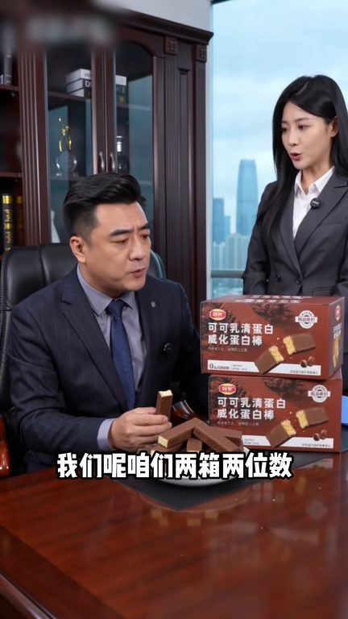
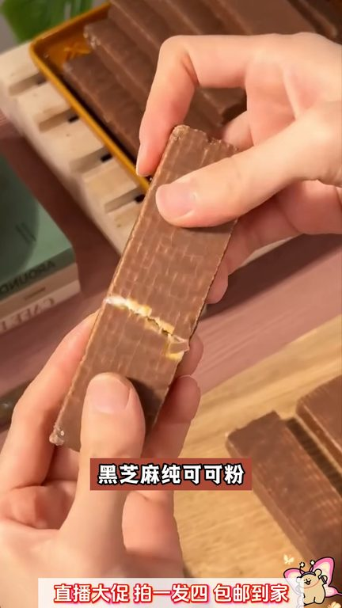
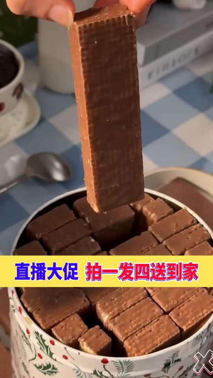

TOP 1 · 代表素材深度拆解
核心放量 稳健
视频为原始素材 HTTPS 链接；点击后加载，建议在网络环境良好时播放。
66.5万素材消耗
3.83%CTR
16.7%类目消耗占比
+0.15pp较类目均值
表现判断
该素材是类目内第 1 名，属于“核心放量”；CTR 高于类目均值。消耗体现承接规模，CTR 体现首屏与定向效率，两项应结合判断，不能仅以单指标下结论。
表达标签
口播三段式证据
开场钩子如果你不爱吃黄瓜和鸡蛋,那你一定要试试这个鲁青微化蛋白棒,很多人不知道,鲁青蛋白是从牛奶中分离体取出来的优质蛋白质。
中段论证常吃特别好,它每一根都真正添加了大豆蛋白,乳清蛋白,搭配全麦,梨麦,燕麦,齐鸭子,黑芝麻,纯可可粉,科育配方制作一场,饿了禅了来一根特别合适,还是独立包装的,干净卫生携带方便,一口下去浓郁可可,风味酥酥脆脆,真的超好吃。上班上学来不及吃早饭的,家里有老人孩子的,一定要试试。你要是下个月再买这可可乳青微化蛋白棒,那都划不来了,正常你买一箱的价格,今天厂家直播间…
结尾转化都是独立包装,随手打开一包就能吃,他每一根都真正添加了大豆蛋白,乳青蛋白,搭配全麦,梨麦,燕麦,齐鸭子,黑芝麻,可可粉科学配方制作而成。喝了馋了来一根特别合适,还是独立包装的,干净卫生携带方便,一口下去浓郁可可,风味酥酥脆脆,真的超好吃,上班上学来不及吃早饭的,家里有老人孩子的,一定要试试。
有效点
- CTR 3.83% 高于类目均值 3.68%，开场或人群指向具备点击优势
- 口播包含明确到手机制或直播间指令，转化路径较完整
迭代动作
- 保留当前高效钩子，复制 3 个变量版本：人物、首句和首帧分别单变量测试
- 视频时长偏长，建议剪出 30–45 秒短版，仅保留钩子、两项证据和一次 CTA
- 复核功效、绝对化及价格稀缺措辞；增加适用边界和效果因人而异提示
合规关注

钩子建立 · 5.0s

场景/问题展开 · 37.6s

卖点证据 · 86.4s
转化收口 · 119.0s
查看完整口播摘要
如果你不爱吃黄瓜和鸡蛋,那你一定要试试这个鲁青微化蛋白棒,很多人不知道,鲁青蛋白是从牛奶中分离体取出来的优质蛋白质。常吃特别好,它每一根都真正添加了大豆蛋白,乳清蛋白,搭配全麦,梨麦,燕麦,齐鸭子,黑芝麻,纯可可粉,科育配方制作一场,饿了禅了来一根特别合适,还是独立包装的,干净卫生携带方便,一口下去浓郁可可,风味酥酥脆脆,真的超好吃。上班上学来不及吃早饭的,家里有老人孩子的,一定要试试。你要是下个月再买这可可乳青微化蛋白棒,那都划不来了,正常你买一箱的价格,今天厂家直播间都能带走四箱了。姐妹们,可可乳青微化蛋白棒,买两箱送两箱,到手足足四大箱的活动已经结束了哈。很多家人陆陆续续都已经收到货了,反馈相当的好,都说特别的好吃。还有的家人说没抢到,想让我再上点库存,我这又死皮赖脸,好说歹说像厂家要来了。但是你要再抢不到,我也真的没办法了,今天你来我们直播间还是之前的活动,到手是整整四大箱的可可乳青微化蛋白棒。就这个价格,不是厂家直播间搞活动,你去外面连个一箱也买不来吧。我老公这人对吃的可挑剔了,但他第一次吃这款可可微化蛋白棒,就赞不绝口。都是独立包装,随手打开一包就能吃,他每一根都真正添加了大豆蛋白,乳青蛋白,搭配全麦,梨麦,燕麦,齐鸭子,黑芝麻,可可粉科学配方制作而成。喝了馋了来一根特别合适,还是独立包装的,干净卫生携带方便,一口下去浓郁可可,风味酥酥脆脆,真的超好吃,上班上学来不及吃早饭的,家里有老人孩子的,一定要试试。